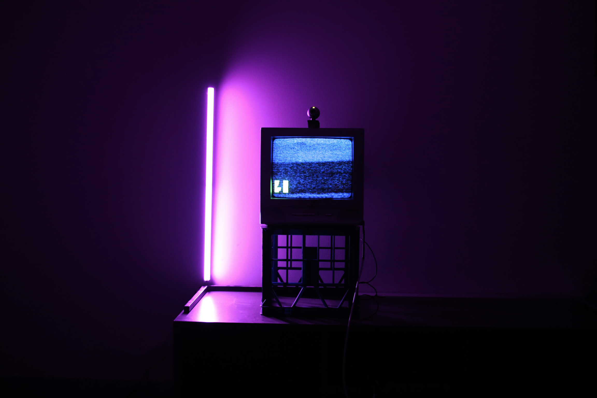

About
Kilian is a graphic designer and artist based in Munich, Germany.
In his exploration of communication, he's mostly silly but can sometimes be serious, reminding us of our collective belonging.
With an interest in the extreme sides of the spectrum and the tension in between, each project becomes a canvas for exploration.
For collaborations, get in touch here.
Or just pick up your phone baby (+61) 410 378 301.
Selected Work
